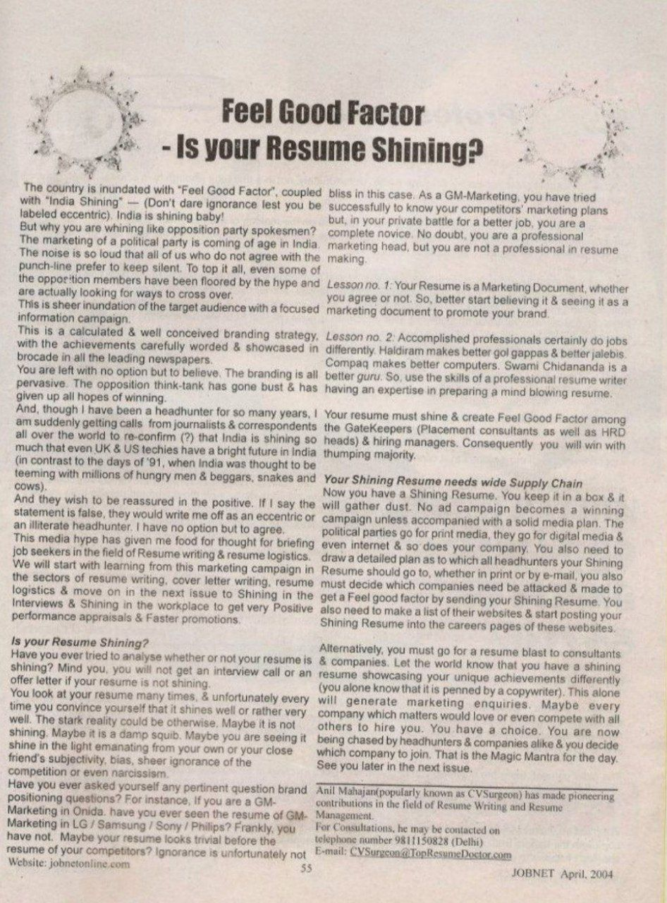

JOBNET Career Intelligence Archive
Does your resume inspire confidence? Rather than asking "Is my resume complete?", the question every professional must answer is: "Does my resume create a Feel Good Factor in the reader?"
Overview
In this companion article to the earlier resume series, Anil Mahajane encouraged professionals to evaluate their resumes from a completely different perspective.
Rather than asking "Is my resume complete?", the article challenged readers to ask "Does my resume inspire confidence?" A resume should do much more than record employment history. It should project credibility, communicate achievements and create a positive first impression that encourages employers to learn more about the candidate.
More than two decades later, this message has become even more significant. Resumes are now evaluated by both technology and people within seconds. Recruiters often spend only a brief time on an initial review, making clarity, relevance and impact essential.
Original Publication
Original published article — scanned archival page.

Feel Good Factor – Is Your Resume Shining? · JOBNET · April 2004
Article Transcript
Published in JOBNET
The country is inundated with "Feel Good Factor", coupled with "India Shining" — Don't dare ignorance lest you be labeled eccentric. India is shining baby! But why are you whining like opposition party spokesmen?
The marketing of a political party is coming of age in India. The noise is so loud that all of us who do not agree with the punch-line prefer to keep silent. This is sheer inundation of the target audience with a focused information campaign. This is a calculated and well-conceived branding strategy, with the achievements carefully worded and showcased in brocade in all the leading newspapers.
This media hype has given me food for thought for briefing job seekers in the field of resume writing and resume logistics. We will start with learning from this marketing campaign in the sectors of resume writing, cover letter writing and resume logistics — and then move on to shining in the interviews and in the workplace to get very positive performance appraisals and faster promotions.
Have you ever tried to analyse whether or not your resume is shining? You will not get an interview call or an offer letter if your resume is not shining. You look at your resume many times and unfortunately every time you convince yourself that it shines well. The stark reality could be otherwise. Maybe it is not shining. Maybe it is a damp squib. Maybe you are seeing it shine in the light emanating from your own or your close friend's subjectivity, bias, sheer ignorance of the competition or even narcissism.
Have you ever asked yourself any pertinent brand positioning questions? For instance, if you are a GM-Marketing in Onida, have you ever seen the resume of a GM-Marketing in LG, Samsung, Sony or Philips? Frankly, you have not. Maybe your resume looks trivial before the resume of your competitors? Ignorance is unfortunately not bliss in this case. As a GM-Marketing, you have tried successfully to know your competitors' marketing plans — but in your private battle for a better job, you are a complete novice. No doubt, you are a professional marketing head, but you are not a professional in resume making.
Your resume is a Marketing Document, whether you agree or not. So better start believing it and seeing it as a marketing document to promote your brand.
Accomplished professionals certainly do jobs differently. Haldiram makes better gol gappas. Compaq makes better computers. Swami Chidananda is a better guru. Use the skills of a professional resume writer having an expertise in preparing a mind-blowing resume.
Your resume must shine and create a Feel Good Factor among the GateKeepers — placement consultants, HRD heads and hiring managers. Consequently you will win with a thumping majority.
Now you have a Shining Resume. You keep it in a box and it will gather dust. No ad campaign becomes a winning campaign unless accompanied by a solid media plan. The political parties go for print media, digital media and even the internet — and so does your company.
You also need to draw a detailed plan as to which headhunters your Shining Resume should go to, whether in print or by e-mail. You must decide which companies need to be attacked and made to get a Feel Good Factor by receiving your Shining Resume. Make a list of their websites and start posting your Shining Resume into the careers pages of these websites.
Alternatively, you must go for a resume blast to consultants and companies. Let the world know that you have a shining resume showcasing your unique achievements differently. This alone will generate marketing enquiries. Maybe every company which matters would love — or even compete with others — to hire you. You have a choice. You are now being chased by headhunters and companies alike, and you decide which company to join. That is the Magic Mantra for the day.
Modern Context
The hiring landscape has transformed dramatically since this article first appeared in 2004. A resume is no longer just a document submitted with a job application. It has become part of a professional's digital leadership identity, supported by LinkedIn, executive biographies, online portfolios, conference presentations, published articles and professional achievements.
Today's resume must perform successfully across multiple stages of evaluation:
Each reviewer asks a simple question: "Does this professional create confidence?"
A shining resume communicates much more than experience. It communicates:
Then & Now
Today's executive resume should tell a complete leadership story.
Every section should reinforce why an organisation should invest in your leadership.
Key Takeaways
Practical Advice
A great resume does not attempt to say everything. It communicates the right things with clarity, credibility and confidence.
Looking Ahead
The resumes that succeed will not necessarily be the longest or the most visually attractive — they will be the ones that clearly communicate value, inspire confidence and demonstrate leadership potential.
Technology will continue to reshape recruitment, but the purpose of a resume will remain constant. It is your first professional conversation with an employer. That was the central message of Feel Good Factor – Is Your Resume Shining? in 2004, and it continues to guide professionals navigating today's highly competitive executive hiring landscape.
About the Author